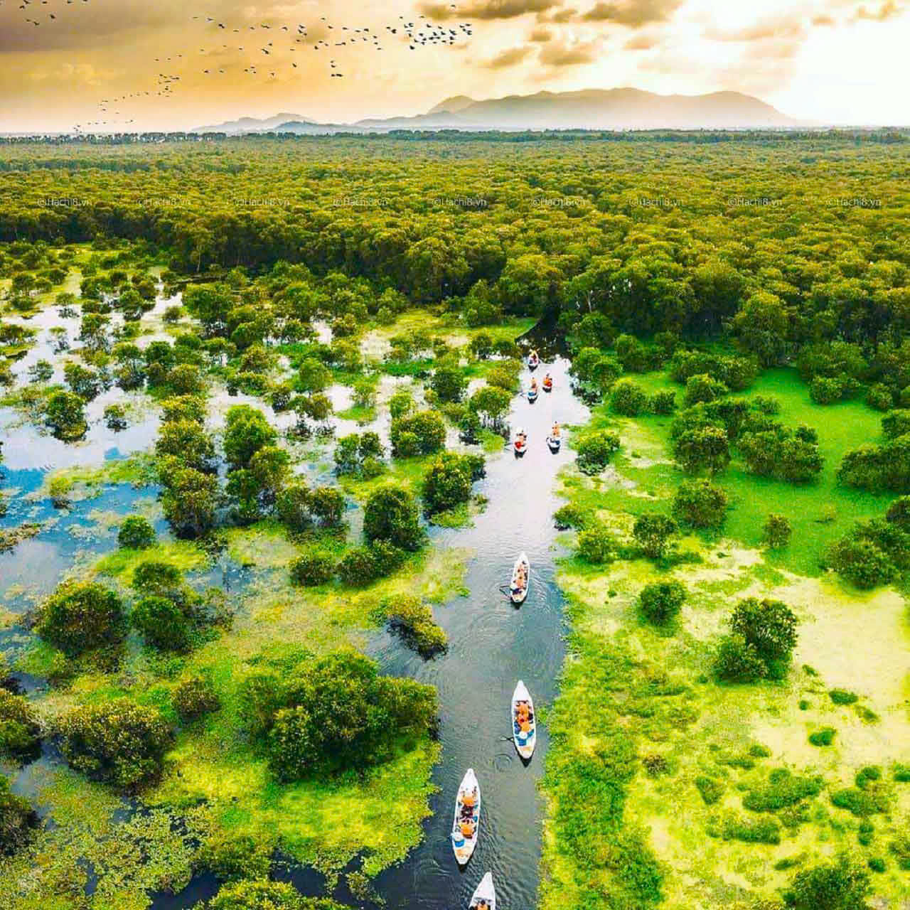
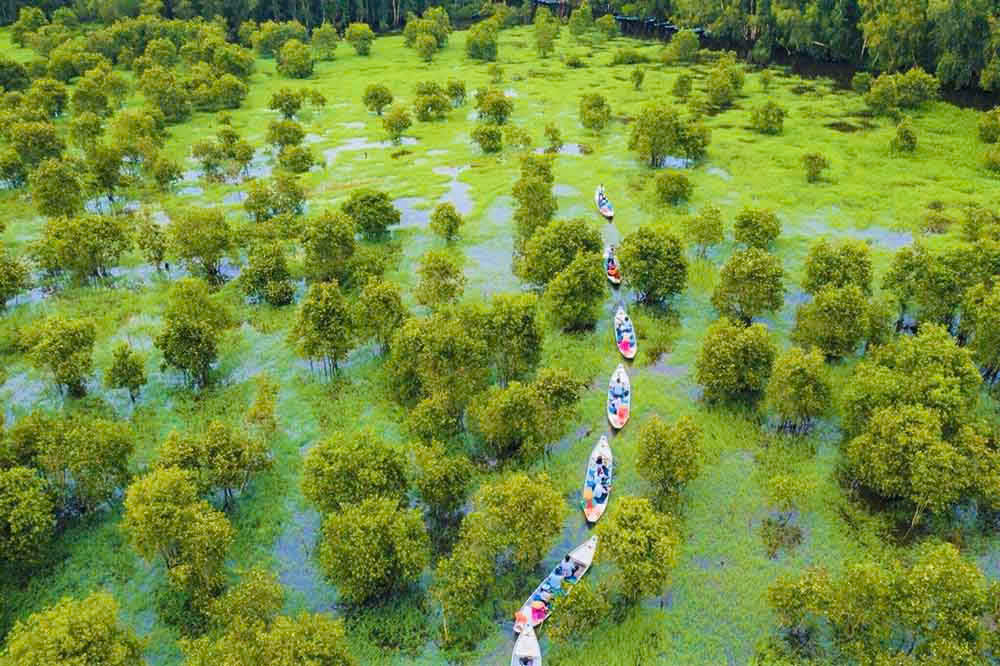
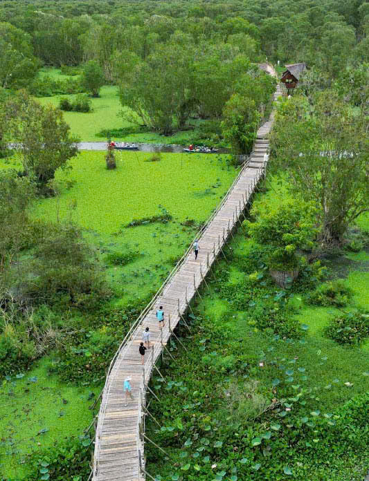
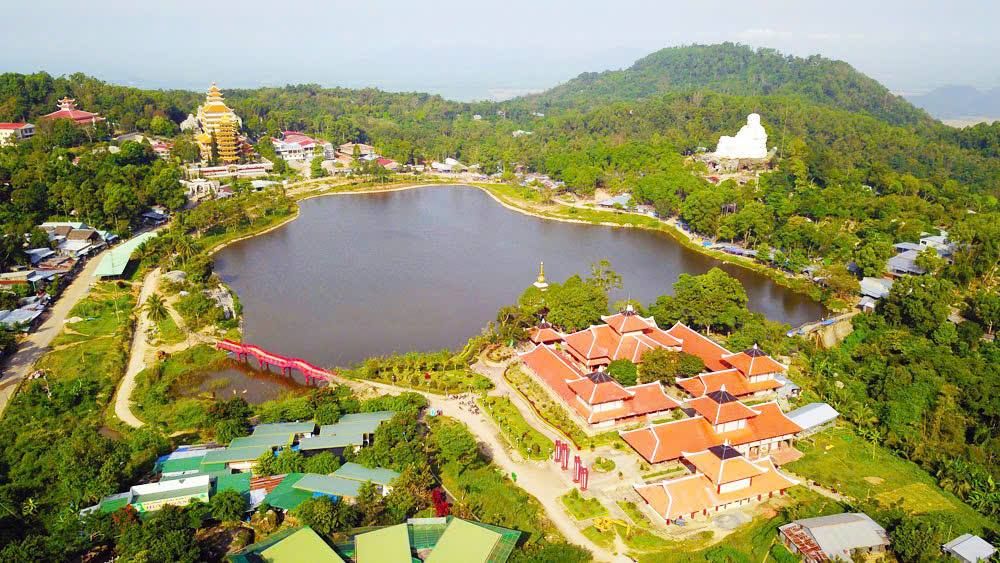
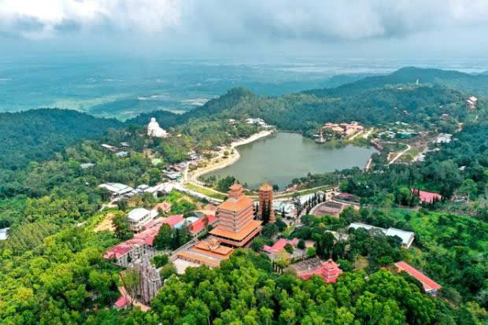
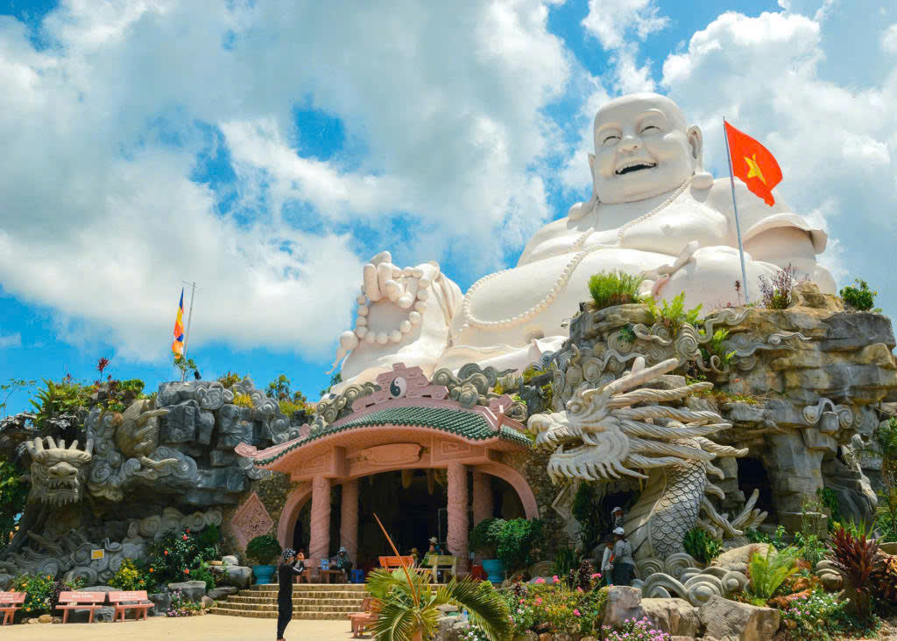
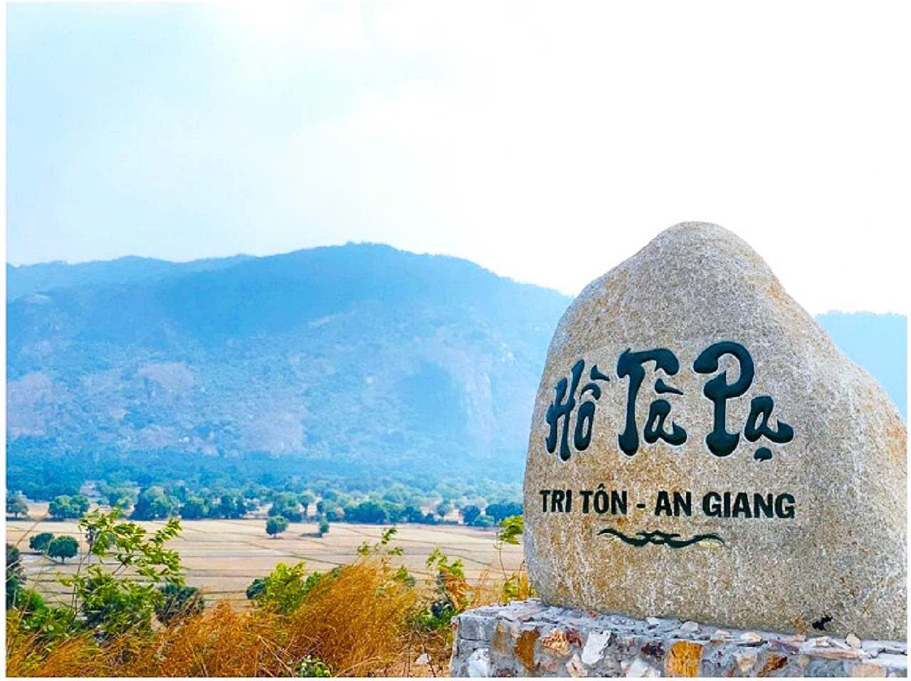
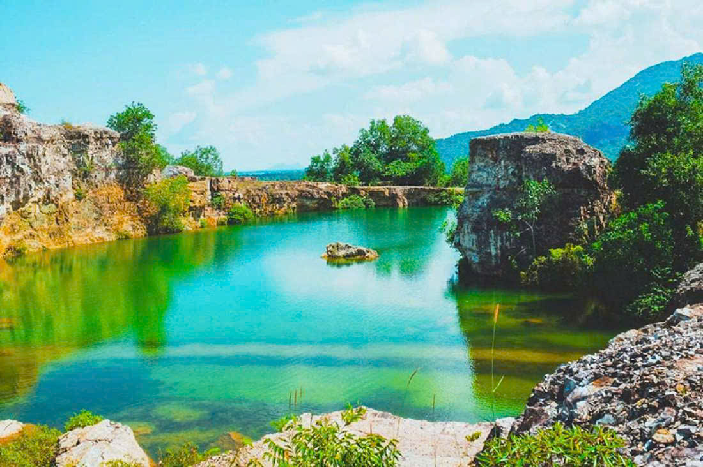
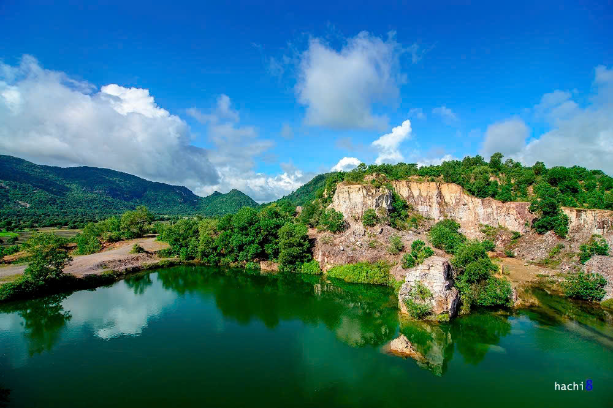

Rừng Tràm Trà Sư là một khu rừng ngập nước tiêu biểu cho hệ sinh thái vùng Đồng Tháp Mười, nằm tại huyện Tịnh Biên, tỉnh An Giang, cách thành phố Châu Đốc khoảng 20 km. Đây là điểm du lịch sinh thái nổi tiếng của miền Tây Nam Bộ, thu hút nhiều du khách nhờ cảnh quan thiên nhiên hoang sơ và hệ động thực vật phong phú.
Những trải nghiệm thú vị ở rừng tràm Trà Sư:
Đi xuồng ba lá xuyên rừng: Du khách có thể ngồi trên những chiếc xuồng nhỏ, len lỏi qua các con rạch phủ đầy bèo xanh, tận hưởng không khí trong lành và ngắm nhìn hệ động thực vật đa dạng.
Cầu tre xuyên rừng dài nhất Việt Nam: Chiếc cầu tre dài hơn 10 km giúp du khách khám phá rừng tràm một cách dễ dàng và chụp ảnh check-in tuyệt đẹp.
Lên đài quan sát: Ngắm toàn cảnh rừng tràm từ trên cao, tận hưởng không gian xanh mát và yên bình.
Thưởng thức đặc sản miền Tây: Thưởng thức các món ăn dân dã như cá lóc nướng trui, lẩu mắm, chuột đồng nướng, gỏi sầu đâu…



Núi Cấm (hay còn gọi là Thiên Cấm Sơn) là một trong những địa điểm du lịch nổi tiếng nhất của tỉnh An Giang, thuộc vùng Bảy Núi (Thất Sơn) của miền Tây Nam Bộ. Nằm ở xã An Hảo, huyện Tịnh Biên, Núi Cấm không chỉ có cảnh quan thiên nhiên hùng vĩ mà còn là nơi linh thiêng, thu hút du khách hành hương và khám phá.
Những trải nghiệm thú vị ở Núi Cấm:
Leo núi, trekking: Dành cho những ai yêu thích chinh phục thiên nhiên.
Tham quan chùa chiền: Cảm nhận sự linh thiêng và tìm về không gian thanh tịnh.
Check-in sống ảo: Khung cảnh đẹp, thích hợp cho các bức ảnh ấn tượng.
Thưởng thức ẩm thực địa phương: Các món ngon như gà đốt lá chúc, bánh xèo, lẩu mắm, bò xào lá giang,…



Hồ Tà Pạ là một trong những điểm du lịch nổi tiếng của tỉnh An Giang, được mệnh danh là “tuyệt tình cốc” miền Tây nhờ vẻ đẹp hoang sơ, huyền bí và thơ mộng. Hồ nằm trên địa bàn xã Núi Tô, huyện Tri Tôn, tỉnh An Giang, và là một phần của dãy núi Tà Pạ, thuộc vùng Thất Sơn kỳ vĩ.
Những trải nghiệm thú vị ở Hồ Tà Pạ:
Check-in sống ảo: Đây là địa điểm yêu thích của các tín đồ du lịch và nhiếp ảnh gia nhờ cảnh sắc tuyệt đẹp và không gian hoang sơ, đầy bí ẩn.
Cắm trại, dã ngoại: Với không gian thoáng đãng, hồ Tà Pạ là nơi lý tưởng để tổ chức các buổi dã ngoại, cắm trại cùng bạn bè và gia đình.
Tham quan chùa Tà Pạ: Gần hồ có chùa Tà Pạ – một ngôi chùa Khmer độc đáo, mang đậm bản sắc văn hóa của đồng bào Khmer Nam Bộ.
Thời điểm đẹp nhất để đến Hồ Tà Pạ là vào mùa khô (từ tháng 11 đến tháng 4), khi trời trong xanh, nắng đẹp, nước hồ trong vắt, tạo nên cảnh sắc tuyệt vời.


